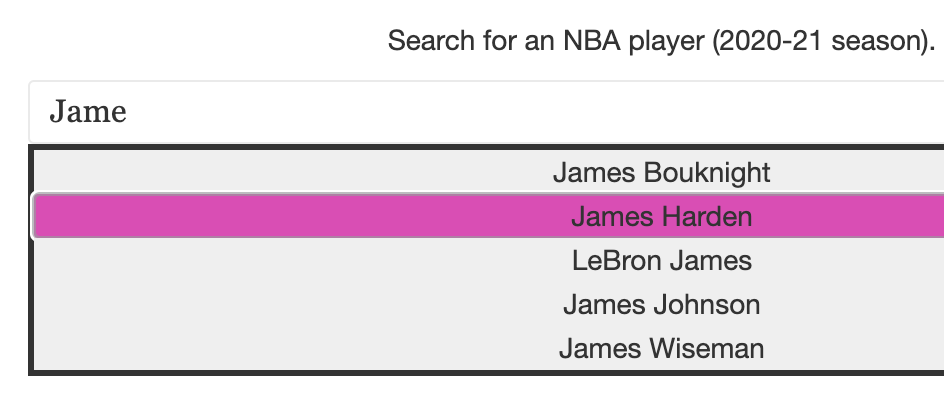
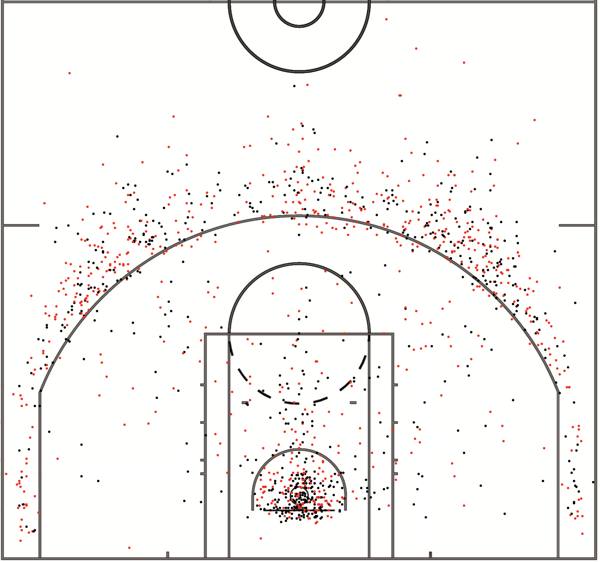

How to Use
This tool has four portions.


Shot Chart
The first is a searchbar. Use this to search for NBA players from the 2020-21 season.
You can click on one of the preset players to start searching;
or you can type a player's name into the searchbox
and explore that way. The image on the left is a snapshot of selecting a player.
The second is a shot chart. This displays an individual player's shot attempts from the entire
2020-21 season. Hover over the dots for more. (Steph Curry's shot chart shown at left).
The third is a graph displaying a player's shot accuracy as a function of distance (i.e.,
as they get further away from the hoop). Brush on this graph to filter shots on the court by distance.
The fourth is a series of pie charts displaying the accuracy percentage
for both 2-pointers and 3-pointers (outside the arc). The sizes of the charts correspond to how
of each type of shot a player took. For example, Rudy Gobert's 3-point chart is tiny, as he only attempted
4 3-pointers in the entire season.
Background
The NBA is one of the most popular sports leagues in the world. Tracking and visualizing
player statistics has become very popular in the past few years. With this tool, we hope to
give more information about individual players' shot-taking -- where on the court they shoot from,
how much they shoot the ball, and of course, how good they are at it. Please see our
Process Book
for more about our design, methodology, and iterative process.
Click "About" at the top of the page to access this popup again. You can use the top left box to
navigate around the page as well as access the Process Book and our demo video.